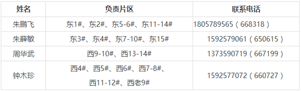
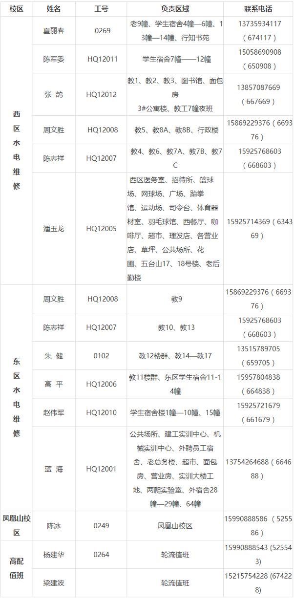
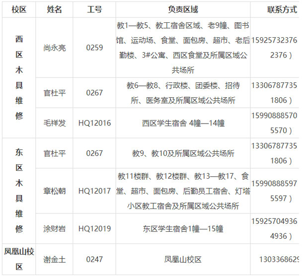

返回
返回
后勤服务总公司报到程序：
第一步：向班主任领取住宿房号（或打印迎新系统生成的报到单）
第二步：交纳代收杂费
交纳地点：
丽水学院本部：行政楼二楼计划财务处
凤凰山校区：1#教学楼二楼
第三步：自愿购买生活用品
为方便广大同学，学校提供床上用品代购服务，已统一放置在新生床位上，价格：550元/套（包括盖棉絮、云丝枕芯、床单、被套、蚊帐、竹凉席等）
退货流程：
（1）退货时间：9月12日20：00前
（2）退货地点：所在楼宇门厅值班服务台（楼宇管理员处）
（3）退货手续：同学自提床上用品到所在楼宇门厅，整收整取，
并作相应登记
（4）温馨提醒：无需购买的同学请勿拉开牛筋包拉链或撕开封
条，否则视作自愿购买，无法办理退货手续
第四步：到所在楼宇门厅管理员处领取寝室钥匙
后勤服务总公司服务内容：
一、24小时服务、报修、投诉、监督电话
固定电话：0578-2271234
移动电话：13884351890（校园移动虚拟网短号：558890）
二、一卡通服务
我校推行一卡通服务，学生一卡在手，即可享受就餐、宿舍用电、宿舍热水、购物等服务。
服务地点：东区学生事务中心一楼东侧
服务内容：一卡通充值、电费充值、学生寝室空调卡充值，并配有学生寝室热水器、开水器自动转账终端。
工作日服务时间：7:30—19:30
双休日及法定节假日值班时间：
上午8:30—11:30
下午13:30—16:30
三、餐饮服务
我校设有学生基本快餐厅5个、特色餐厅4个、接待餐厅1个、清真餐厅2个。其中“浙江省食品安全示范性餐厅”1个，“丽水市食品安全示范性餐厅”1个，丽水市食品卫生量化考核A级餐厅1个，B级餐厅5个。根据师生的饮食特点和就餐习惯，餐厅积极引进各地美食风味，不断增加花色品种，承接各类招待宴席、生日聚餐、毕业晚餐等，既保证学生基本快餐服务，又满足不同层次师生的就餐需求。
西校区
第一食堂 （思香厅、溢香厅）：供应快餐、面食类
第二食堂 （沁香厅）：供应快餐、面食类
特色餐厅 （风味厅）：供应砂锅、凉皮、小笼包、烫面、稀饭、麻辣烫、缙云烧饼、馄饨等
二楼老涂猪肠粉干档口：供应温州猪肠粉干
三楼清真餐厅：供应清真小吃
食 香 苑：供应快餐、盖浇饭、面食类
东校区
第七食堂（莲花厅）：供应快餐、面条，另设缙云烧饼：稀饭、面食特色档口
第八食堂（馨香厅）：供应快餐、面食、砂锅等
教工餐厅（德馨厅）：供应小炒、团餐、宴席
堂外堂面点主题餐厅：供应面条、馒头等
凤凰山校区
卫校餐厅：供应快餐
四、住宿服务
1. 招待宾馆
学校设有招待宾馆（3#公寓楼），坐落在丽水学院校园西北边区域。共有客房93间，床位186位，其中套房16套，标准间77间。客房设有空调、网络电视、电话、宽带网、24小时空气热水能等服务设施。宾馆停车便捷，能够充分满足学员住宿的需求。
宾馆常年对外开放。现为方便广大师生、家长，特推出持学生证办理入住享有特价房优惠的活动。欢迎广大师生前来咨询。预订电话：2173188
2. 学生宿舍楼宇服务项目
学生宿舍楼宇服务台免费提供小五金、针钱包、自行车打气桶等日常生活用具，常设普通应急药、担架等物资，免费提供学生物品临时寄存、水电木设施报修登记、各类咨询等服务。
3. 学生宿舍楼生活指导老师联系方式

五、物业服务
后勤服务总公司物业服务中心负责全校教学楼、学生宿舍楼水、电、木的维修服务，以及校园环境的巡查及保洁工作。为了方便广大同学，现将有关报修方式和联系电话通告如下：
1. 水电木报修方式
（1）“网页报修”
后勤服务总公司网上服务大厅报修功能使用说明：
“丽水学院”首页 右下角“部门导航”进入“后勤服务总公司
”点击页面右侧“服务大厅”的相关功能
（2）“电话报修”
1拨打后勤24小时服务热线“2271234”或移动校园短号“558890”
2直接拨打本楼宇水电木维修人员电话报修
2. 楼宇水电木维修联系方式
（1）水电维修

（2）木具维修

六、商贸服务
西校区商铺：兴泰隆超市、金天饼屋面包房、上舍茶馆、环球电脑店、学士眼镜、动感科技电脑店、文印中心、理发店、照相馆、农行ATM机、中行ATM机、邮政ATM机、工商ATM机等。
东校区商铺：时代联华超市、廉美面包房、阿拉丁清真餐厅、叙府铁板炒饭、小食代小吃、磨磨粗粮粥铺、水果店、学士眼镜店、电子之家手机店、YOYO奶茶店、复印打印店、理发店、温州银行ATM机、建设银行ATM机、工商银行ATM机等。
凤凰山校区商铺：照相馆、公寓楼小超市、食堂超市等。
其中，西区金天饼屋面包房是我市知名烘培连锁企业，现有中央工厂一家、分店六家。主要经营产品包括生日蛋糕、面包、酥点、西点、糕点、中秋月饼、年糖、年糕等，还设有生日蛋糕DIY体验中心。西区兴泰隆超市于2013年底获评“浙江省高校教育超市标准店”，同时荣获浙江省教育后勤2014年度商贸管理工作“优秀门店”称号。
七、医疗服务
服务地点：西校区自动取款机隔壁一楼
服务时间：8:00—20:00
联系电话：诊疗室 0578-2271120
预防保健室 2272710
八、其他
校内美食、网上报修、低电查询等更多后勤服务信息请关注：
微信公众号“万达微后勤”
关于学生公寓热水和开水系统使用说明 ：
1．为方便广大同学，学生公寓热水（洗澡）和打开水统一使用校园一卡通。
2．校园一卡通内热水和开水转账需在一卡通内有足够金额的情况下独立操作。热水和开水系统模块为脱机模式，热水和开水系统模块内的余额无法卡通挂失，一卡通相应服务需到后勤服务总公司服务大厅办理（东校区教9#东侧门，移动营业厅对面）。
3．热水卡将在所有学生公寓门厅设有自助转账机，开水卡将分别在东校区的教9后勤服务大厅、15#学生公寓楼门厅；西校区4#、9-10#学生公寓楼门厅分别设有自助转账机，广大同学在使用热水（洗澡）和打开水前可将校园卡内的金额通过转账机转至热水和开水相应模块。每次转账限额为5元，均可重复转账。
温馨提醒：因热水和开水在一卡通遗失或其他原因注销后，模块内金额无法进行挂失操作，建议广大同学根据自身使用热水和开水的频率合理转账。
后勤服务监督投诉流程 ：
广大师生对报修后48小时内未解决的问题或对后勤公司其他服务项目有意见和建议的，可通过以下几种方式进行投诉反映：
为保障广大师生的利益，建议对现场问题可以直接向相应服务片区的负责人进行反映，以便问题能第一时间予以解决，提高问题处理的时效性。